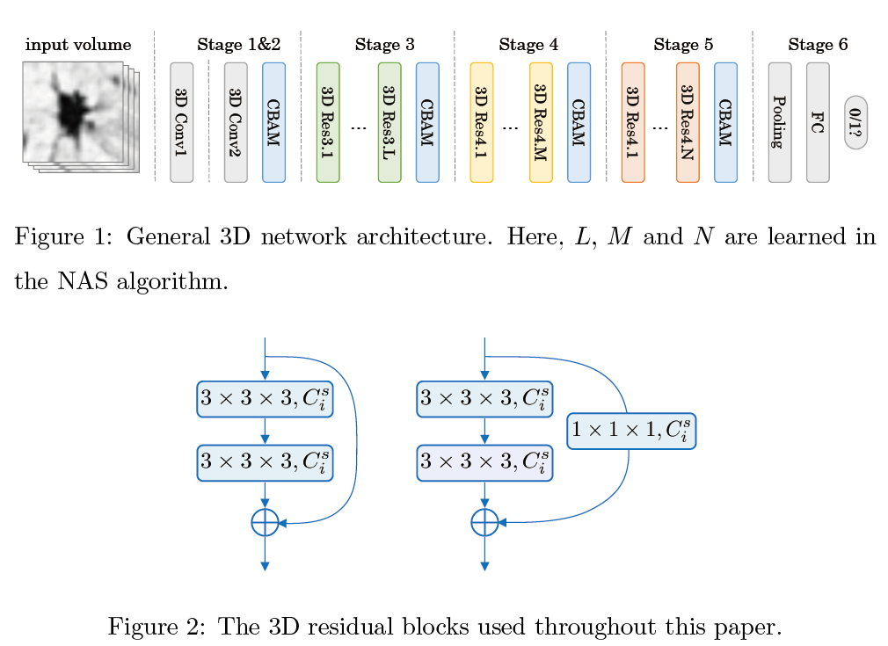

Learning Efficient, Explainable and Discriminative Representations for Pulmonary Nodules Classification (NAS-Lung)
Published in January 14, 2021
Recommended citation: https://www.sciencedirect.com/science/article/pii/S0031320321000121
[Paper@PR] [Paper@arxiv] [Code@Github]
Architecture

Results
NASLung
| model | Accu. | Sens. | Spec. | F1 Score | para.(M) |
|---|---|---|---|---|---|
| Multi-crop CNN | 87.14 | - | - | - | - |
| Nodule-level 2D CNN | 87.30 | 88.50 | 86.00 | 87.23 | - |
| Vanilla 3D CNN | 87.40 | 89.40 | 85.20 | 87.25 | - |
| DeepLung | 90.44 | 81.42 | - | - | 141.57 |
| AE-DPN | 90.24 | 92.04 | 88.94 | 90.45 | 678.69 |
| NASLung (ours) | 90.77 | 85.37 | 95.04 | 89.29 | 16.84 |
Searched 3D Networks
| Model | Accu. | Sens. | Spec. | F1 Score | para. |
|---|---|---|---|---|---|
| Model-1 | 88.83 | 87.20 | 90.12 | 87.50 | 0.14 |
| Model-2 | 88.42 | 84.38 | 91.46 | 86.67 | 2.61 |
| Model-3 | 88.17 | 84.44 | 91.60 | 86.50 | 3.90 |
| Model-4 | 88.13 | 83.20 | 92.28 | 86.30 | 2.54 |
| Model-5 | 87.97 | 83.72 | 91.31 | 86.22 | 0.43 |
| Model-6 | 87.77 | 83.67 | 91.00 | 86.03 | 0.22 |
| Model-7 | 87.76 | 84.14 | 89.79 | 85.98 | 0.86 |
| Model-8 | 88.00 | 82.43 | 92.69 | 85.97 | 4.02 |
| Model-9 | 88.04 | 78.01 | 96.09 | 85.36 | 4.06 |
| Model-10 | 87.22 | 82.70 | 90.92 | 85.32 | 0.24 |
Prerequisites
- Linux or similar environment
- Python 3.7
- Pytorch 0.4.1
- NVIDIA GPU + CUDA CuDNN
Getting Started
Installation
-
Clone this repo:
shell script git clone https://github.com/fei-hdu/NAS-Lung cd NAS-Lung
- Install PyTorch 0.4+ and torchvision from [Pytorch](http://pytorch.org) and other dependencies (e.g., visdom and dominate). You can install all the dependencies by
```shell script
pip install -r requirments.txt
```
- Download Dataset [LIDC-IDRI](https://wiki.cancerimagingarchive.net/display/Public/LIDC-IDRI)
### Neural Architecture Search
```shell script
python search_main.py --train_data_path {train_data_path} --test_data_path {test_data_path} --save_module_path {save_module_path}
```
### Train/Test
- Train a model
```shell script
sh run_training.sh
```
- Test a model
```shell script
python test.py --test_data_path {test_data_path} --preprocess_path {preprocess_path} --model_path {model_path}
```
### DataSet
- [LIDC-IDRI](https://wiki.cancerimagingarchive.net/display/Public/LIDC-IDRI)
### Model Result
- our final result can be download:[Google Drive](https://drive.google.com/drive/folders/1vUFi5tEfMcDcKqMbxuN3Tt44QwLcDZnA?usp=sharing)
### Training/Test Tips
- Best practice for training and testing your models.
- Feel free to ask any questions about **_coding_**. **Fuhao Shen, `1048532267sfh@gmail.com`**
## Citation
If you find this useful for your research, please cite our paper as:
```
@article{Jiang2021naslung,
author = {Hanliang Jiang and Fuhao Shen and Fei Gao and Weidong Han},
title = {Learning efficient, explainable and discriminative representations for pulmonary nodules classification},
journal = {Pattern Recognition},
volume = {113},
pages = {107825},
year = {2021},
issn = {0031-3203},
doi = {https://doi.org/10.1016/j.patcog.2021.107825},
}
```
## Acknowledgement
- Our work/code is inspired by [Partial Order Pruning: for Best Speed/Accuracy Trade-off in Neural Architecture Search, CVPR 2019](https://github.com/lixincn2015/Partial-Order-Pruning).
## Selected References
- S. Armato III, G. et al., Data from **LIDC-IDRI**, The Cancer Imaging . [LIDC-IDRI](http://doi.org/10.7937/K9/TCIA.2015.LO9QL9SX).
- X. Li, Y. Zhou, Z. Pan, J. Feng, **Partial order pruning**: For best speed/accuracy trade-off in neural architecture search (2019) 9145–9153.
- S. Woo, J. Park, J.-Y. Lee, I. So Kweon, **CBAM**: Convolutional block attention module, in: Proceedings of the European Conference on Computer Vision (ECCV), 2018, pp. 3–19.
- W. Liu, Y. Wen, Z. Yu, M. Li, B. Raj, L. Song, **Sphereface**: Deep hypersphere embedding for face recognition, in: The IEEE Conference on Computer Vision and Pattern Recognition (CVPR), 2017.
- T. Elsken, J. H. Metzen, F. Hutter, **Neural architecture search**: A survey, Journal of Machine Learning Research 20 (55) (2019) 1–21.
- W. Zhu, C. Liu, W. Fan, X. Xie, **Deeplung**: Deep 3d dual path nets for automated pulmonary nodule detection and classification, in: 2018 IEEE Winter Conference on Applications of Computer Vision (WACV), IEEE, 2018, pp. 673–681.